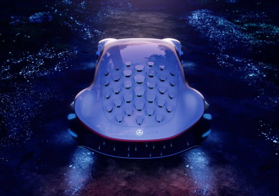

The VISION AVTR
Inspered by the future
Inspered by the future
Електромобільність у гармонії з людиною та природою. Екологічна технологія органічних акумуляторів та продумана операційна стратегія концепт-кара VISION AVTR.

На виставці CES 2020 було представлено новий концептуальний Mercedes-Benz – VISION AVTR. Футуристична концепція представленого електромобіля поєднує людину, природу та автомобіль унікальним чином.
Ола Калленіус, голова правління Daimler AG та Mercedes-Benz AG, у своєму виступі представив концепт-кар разом із лауреатом премії Оскар та творцем фільму Аватар, Джеймсом Кемероном.
Саме філософія, створена культовим режисером у фантастичному фільмі, стала основою створення VISION AVTR.

«Mercedes-Benz завжди був одним із найтехнологічніших преміальних брендів. Тепер настав час поєднати розкіш та екологічність. Адже тільки так ми можемо відповідати стандартам майбутнього».

Дизайн VISION AVTR – втілення екологічності
Новаторська концепція VISION AVTR поєднує в собі екологічну взаємодію дизайну інтер'єру, екстер'єру та UX. Весь процес проектування був спрямований на конкретний результат – унікальний досвід взаємодії та сприйняття концепт-кара водієм та пасажирами. Йшлося про створення унікального простору, в якому пасажири мають біометричний зв'язок один з одним, з транспортним засобом та навколишнім світом.
Бічний зовнішній отвір проходить через внутрішню частину і створює нескінченну петлю, прототипом якої став священний зв'язок між народом На'ві у фільмі Аватар та їх природним середовищем проживання.
Також завдяки подовженому дизайну «One Bow» та органічній філософії дизайну VISION AVTR демонструє радикально новий етап автомобілебудування. Таким чином, пройшовши шлях від концепції усвідомленості до унікального злиття людини та автомобіля, інженерам Mercedes-Benz вдалося створити концептуальний електромобіль VISION AVTR.

Коротким продовженням зовнішнього мінімалістичного дизайну є передні сидіння, виконані в дуже органічній формі, що нагадує листяні гамаки з планети Пандора. Центральна консоль символізує Древо Душ, найсвященніше місце На'ві. Блок управління – інтуїтивно зрозумілим та неймовірно функціональним.


Крім того, центр управління розташовується таким чином, що легко доступний як для водія, так і для пасажира, а також і для пасажирів ззаду.
Таким чином, VISION AVTR встановлює тісний біометричний зв'язок з водієм та допомагає підвищити поінформованість про навколишню ситуацію.
Задня частина сидінь та внутрішнє оздоблення даху, виконані із спеціальної тканини, яка змінює колір. Залежно від освітлення, текстиль може бути темно-синього або ніжного світло-синього кольору.
Але крім цього, екологічність салону електромобіля підвищена за допомогою вегетаріанської шкіри DINAMICA® – першої та єдиної мікрофібри, яка гарантує екологічну ефективність протягом усього виробничого циклу.
DINAMICA® є переробленим матеріалом зі старого одягу, тканин та пластикових пляшок з ПЕТФ.